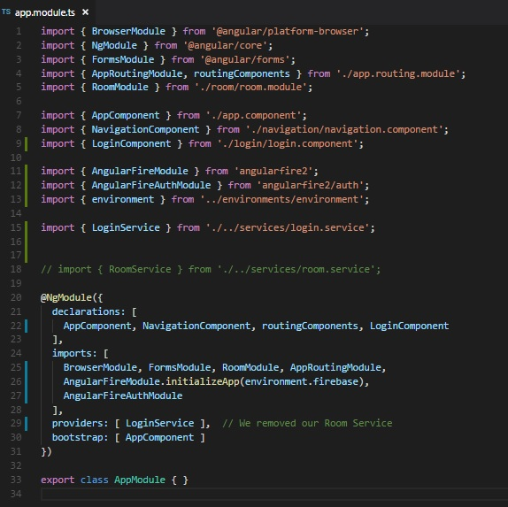

Our next objective will be to get a functioning login service. We will be utilizng the Firebase authentication tools, so we will need to install them. Fortunately there is a package out there that allows us to import them in Angular: angularfire2
Installation instructions from the sourceIf we check out the instructions, they want us to create a new project. No thanks. All we need to do is utilize npm to install (make sure you are in your projects directiory when you run this from your terminal):
npm install angularfire2 firebase --save
So that handles the npm side of things, but before we bring the modules into Angular, we have to configure our connection to firebase. You will often find configuration for databases inside your environments folder, so let's go there. We are looking for the file environment.ts.
If you are with the Geekwise Academy Angular class, you should have recieved the firebase data on slack as an object. It will look something like this.
firebase: {
apiKey: 'awholelottacharacters',
authDomain: 'some location',
databaseURL: 'some other location',
projectId: 'something with geekwise in it',
storageBucket: 'something about buckets?',
messagingSenderId: 'another weird string',
}
Sadly, I can not make that information public facing. If you are doing this on your own, and would like your own project on firebase, you can do so, and its free! Once you create an application on firebase and you go to the firebase console, the 'Get Started here' welcoming page should have a link that reads, 'Add Firebase to your web app'. The same object should be in there.
You might be able to figure out why I wouldn't want to post our class information: It would give absolutely anyone who comes across this page access to our Angular project. That's not cool. You should ALWAYS keep API keys private, and no one should be able to see them ever. For this reason, if you store your keys inside your environments folder, make absolutely sure that it is being .gitignore'd. If you choose to incorporate it some other way, that's fine, as long as the public can't see it. There are programs designed to comb through github and retrieve keys that may have been accidentally posted to github.
So we got our firebase setup complete, but now we need to bring all this stuff into Angular. Fortunately, firebase has Angular modules for us to work with. Can you guess where we would go to bring in modules?
The answer to that question would be our app.module.ts. Let's go there now.
Here are the changes to note:
Is that it?
Yes, we are all set. Now we can use our firebase authentication goodies in the next lesson.